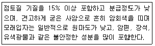
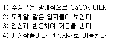
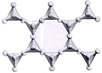
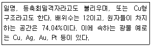
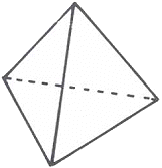
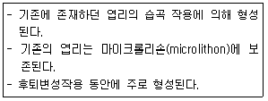
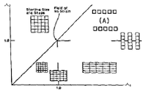
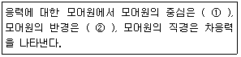
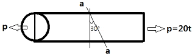
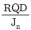

응용지질기사 (2012-05-20 기출문제)
1과목: 암석학 및 광물학
1. 화산암의 일반적인 설명으로 옳은 것은?
- 주로 유리질조직 내지는 반상조직을 보인다.
- 대표적인 암석에는 화강암이 있다.
- 주 구성광물은 석류석-남정석-근청석이다.
- 대체로 검은색을 띤다.
(정답률: 55%)

2. 퇴적환경의 분류에서 다음 중 육성환경에 속하지 않는 것은?
- 에르그(erg)
- 플라야(playa)
- 습지(swamp)
- 석호(lagoon)
(정답률: 85%)
3. 다음 화성암의 화학 성분 중 SiO2 의 함량이 증가함에 따라서 함량이 증가하는 성분은?
- MgO
- CaO
- Na2O + K2O
- Fe2O3 + FeO
(정답률: 87%)
4. 용암터널 내지는 용암튜브(lave tube)를 만들 수 있는 마그마는?
- 화강암질 마그마
- 킴벌라이트(kimberlite) 마그마
- 현무암질 마그마
- 유문암질 마그마
(정답률: 83%)
5. 다음에서 설명하는 퇴적암은?

- 장석질사암(아르코스)
- 석영사암
- 암편사암
- 잡사암(그레이와케)
(정답률: 75%)
6. 다음에서 가장 고압형의 변성상(metamorphic facies)은?
- 불석상(zeolite facies)
- 녹색편암상(greenschist facies)
- 각섬석상(amphibolite facies)
- 에클로자이트상(eclogite facies)
(정답률: 86%)
7. 심성암체를 지붕과 같이 덮고 있는 암체의 일부로서 후에 침식을 받아 심성암체내에 고립된 분포를 보이는 구조는 무엇인가?
- 현수체
- 병반
- 암맥
- 암경
(정답률: 70%)
8. 다음 중 속성작용(diagenesis)에 해당하지 않는 것은?
- 다져짐 작용
- 분급 작용
- 재결정 작용
- 교결 작용
(정답률: 71%)
9. 고철질(염기성)의 화성암이 휘석 혼펠스상의 접촉변성을 받아 생성되는 광물조합에 포함될 수 없는 것은?
- 사방휘석
- 녹염석
- 사장석
- 단사휘석
(정답률: 64%)
10. 다음 설명에 해당되는 변성암은?

- 석회암
- 편마암
- 대리암
- 사문암
(정답률: 87%)
11. 다음 중 반금속에 해당되지 않는 원소는?
- 탄소
- 붕소
- 규소
- 비소
(정답률: 66%)
12. 광물의 물리적 성질은 광물을 이루고 있는 원자들이 서로 결합하는 방식에 따라 달라진다. 광물이 전기와 열에 대한 높은 전도성을 가지며, 불투명한 물리적 성질을 가지게 되는 결합방식은?
- 이온결합
- 공유결합
- 금속결합
- 잔류결합
(정답률: 80%)
13. 광물 결정의 불규칙한 성장으로 만들어진 형태가 아닌 것은?
- 해정(skeletal crystal)
- 누대상 결정(zoned crystal)
- 수지상 결정(dendritic crystal)
- 자형결정(euhedral crystal)
(정답률: 49%)
14. 다음 중 섬유 또는 침상으로 산출되는 광물은?
- 백운석
- 사장석
- 크리소타일
- 할로이사이트
(정답률: 67%)
15. 4방향(팔면체상)의 벽개를 보이는 대표적인 광물은?
- 녹주석
- 방해석
- 섬아연석
- 다이아몬드
(정답률: 54%)
16. 규산염 광물은 SiO4 사면체의 결합 형태에 따라 구분한다. 아래 그림은 각섬석의 구조로서 사면체가 한 방향으로 길게 연결된 사슬이 2가닥으로 이루어진 복쇄형(double chain) 규산염 구조를 보여준다. 이 때 최소 단위의 사면체의 Si : O의 비는 얼마인가?

- 1 : 3
- 1 : 4
- 2 : 7
- 4 : 11
(정답률: 81%)
17. 광물감정에 이용되는 미네랄라이트(mineralright)의 설명으로 옳은 것은?
- 적외선에 의한 광물의 인광색 식별
- 자외선에 의한 광물의 형광색 식별
- 음극선에 의한 광물의 인광색 식별
- X선에 의한 광물의 형광색 식별
(정답률: 73%)
18. 다음에서 설명하는 금속 격자형태는?

- 등축면심격자
- 금강석형격자
- 육방최밀격자
- 등축체심격자
(정답률: 58%)
19. 다음 그림은 정사면체의 결정형이다. 이 결정형에 포함되는 대칭요소가 아닌 것은?

- 4회축
- 대칭면
- 3회축
- 4회 회반축
(정답률: 78%)
20. 다음 중 유용 금속원소의 주원료 광물로서 연결이 바른 것은?
- 티타늄 – 금홍석
- 마그네슘 – 저어콘
- 칼륨 – 카올리나이트
- 텅스텐 – 정장석
(정답률: 47%)
2과목: 구조지질학
21. 주향 N30E, 경사 60NW의 절리면이 있다. 이 절리면의 극점의 방향을 방향각(trend)/기운각(plunge) 으로 바르게 표시한 것은?
- 120/60
- 120/30
- 300/60
- 300/30
(정답률: 44%)
22. 다음 중 섭입대와 관련이 없는 것은?
- 안산암질 마그마
- 멜란지(melange)
- 에클로자이트(eclogite)
- 쌍모식 화산활동(bimodal volcanism)
(정답률: 70%)
23. 판상절리(sheeting joint)의 특징으로 옳지 않은 것은?
- 지표면과 대체적으로 평행하다.
- 주로 수평형태로 발달한다.
- 지하로 갈수록 절리간격이 줄어든다.
- 인장력에 의해 발생한다.
(정답률: 73%)
24. 최대 주응력이 140MPa, 최소 주응력이 60MPa일 때 최소 주응력축과 이루는 각(θ)이 40° 인 면에 작용하는 수직응력(σn)과 전단응력(σs)의 합은 얼마인가?
- 134MPa
- 146MPa
- 158MPa
- 162MPa
(정답률: 67%)
25. 판의 이동속도를 추정하는데 이용될 수 없는 것은?
- 암석의 절대연령
- 지각 열류량
- 지자기 이상
- 열점
(정답률: 70%)
26. 다음 한반도의 지체구조구 중 형성 연대가 가장 최근인 것은?
- 경기육괴
- 옥천습곡대
- 경상분지
- 평남분지
(정답률: 61%)
27. 다음 중 지진자료에 의해서 확인된 지구내부의 단면에서 가장 두꺼운 곳은?
- 상부맨틀
- 연약권
- 암석권
- 대륙지각
(정답률: 47%)
28. 다음에서 설명하는 엽리는 무엇인가?

- 성분엽리(compositional foliation)
- 치아엽리(stylolitic foliation)
- 파랑엽리(crenulation foliation)
- 연속엽리(continuous foliation)
(정답률: 87%)
29. 다음 중 지자기 연대를 최근부터 순서대로 올바르게 나열한 것은?
- 브룬스(Brunhes Epoch), 마쓰야마(Matuyama Epoch), 가우스(Gauss Epoch), 길버트(Gilbert Epoch)
- 마쓰야마(Matuyama Epoch), 가우스(Gauss Epoch), 브룬스(Brunhes Epoch), 길버트(Gilbert Epoch)
- 가우스(Gauss Epoch), 길버트(Gilbert Epoch), 브룬스(Brunhes Epoch), 마쓰야마(Matuyama Epoch)
- 브룬스(Brunhes Epoch), 가우스(Gauss Epoch), 길버트(Gilbert Epoch), 마쓰야마(Matuyama Epoch)
(정답률: 65%)
30. 다음 그림(변형분포도, strain field diagram)에서 (A) 지역에 나타나는 변형형태는?

- 보상변형(compensation)
- 선형신장(linear stretching)
- 축소변형(contraction)
- 팽창변형(expansion)
(정답률: 71%)
31. 지진활동이 활발한 지진대와 관련이 없는 것은?
- 화산대
- 순상지
- 조산대
- 중앙해령
(정답률: 84%)
32. 다음 중 발산형 경계부에 해당하는 지역은?
- 인도네시아
- 일본
- 아이슬란드
- 인도
(정답률: 75%)
33. 다음의 선구조(lineation) 중 그 방향이 최소 주응력(σ3)축과 가장 유사한 것은?
- 광물 신장 선구조
- 습곡축 선구조
- 부딘 구조
- 층리-엽리 교차 선구조
(정답률: 38%)
34. 대륙이 한 덩어리의 초대륙(Pangaea)에서 분리되어 현재와 같은 모양의 대륙으로 분포되었다는 대륙표이설의 증거로 옳지 않은 것은?
- 열대지방에서 생성되는 석탄층이 남극대륙에서 발견된다.
- 남극대륙, 호주, 남아프리카에서는 같은 종류의 식물 화석이 나타난다.
- 인도, 아프리카, 호주는 대부분 현재 열대 내지 온대지방이지만 고생대말에 빙하작용이 있었다.
- 히말라야산맥과 록키산맥은 퇴적암으로 되어있다.
(정답률: 77%)
35. 다음 ( )안에 들어갈 용어로 옳은 것은?

- ① 평균응력(mean stress), ② 편차응력(deviatoric stress)
- ① 수직응력(normal stress), ② 전단응력(shear stress)
- ① 편차응력(deviatoric stress), ② 평균응력(mean stress)
- ① 전단응력(shear stress), ② 수직응력(normal stress)
(정답률: 68%)
36. 음영대(shadow zone)의 직접적인 원인이 되는 지구 내부구조는?
- 맨틀
- 내핵
- 외핵
- 저속도층
(정답률: 76%)
37. 다음 중 해안에서 내륙쪽으로 가장 멀리 떨어진 곳에 쌓인 퇴적층은 어느 것인가?
- 선상지
- 삼각주
- 사주
- 자연제방
(정답률: 57%)
38. 남북주향에 동쪽으로 40° 경사진 사면에 평면파괴가 발생할 수 있는 층의 주향과 경사는 다음 중 어느 것인가?
- E-S, 35° W
- E-W, 30° N
- N-S, 50° E
- N-S, 30° E
(정답률: 48%)
39. 다음 중 산사태의 발생 원인에 해당하지 않는 것은?
- 해수의 침입에 의해 발생
- 폭우 등에 의해 지표가 물로 포화되고 불안정화되어 발생
- 인위적인 과도한 절개에 의해 사면이 불안정화 될 경우에 발생
- 큰 지진으로 인해 발생
(정답률: 88%)
40. 우리나라의 동해와 일본 열도를 둘러싼 태평양판과 유라시아판 사이의 경계부는 판구조론적(plate tectonics) 관점에서 어떤 경계에 속하는가?
- 대륙지각과 대륙지각의 충돌경계
- 대륙지각과 해양지각의 섭입경계
- 해양지각과 해양지각의 확장경계
- 대륙지각과 해양지각의 변환단층경계
(정답률: 85%)
3과목: 탐사공학
41. 암석이 수백도의 고온에 이르면 자성을 잃게 되는 성질을 이용하여 지열의 부존을 확인하는 탐사 방법은?
- 전기비저항법
- Curie점법
- MT법
- P파 지연법
(정답률: 91%)
42. 반사법 탄성파탐사의 자료처리 과정 중 대역 내에 있는 모든 주파수 성분의 진폭을 같도록 조절하는 것을 무엇이라 하는가?
- 백색화(whitening)
- 디멀티플렉싱(demultiplexing)
- 디링잉(deringing)
- 디고스팅(deghosting)
(정답률: 52%)
43. 지구의 총 자기장은 수직성분(Z)과 수평성분(H)으로 나눌 수 있으며, 다시 수평성분은 지리적 북쪽의 수평성분(X)과 지리적 동쪽의 수평성분(Y)으로 나눌 수 있다. 총자기장 벡터의 강조가 FE이며 복각과 편각이 각각 i와 d일 때, 지리적 북쪽의 수평성분의 크기는?
- X = FE × sin(i) × sin(d)
- X = FE × sin(i) × cos(d)
- X = FE × cos(i) × sin(d)
- X = FE × cos(i) × cos(d)
(정답률: 33%)
44. 지오레이다 탐사를 적용하기 전에 고려해야 할 사항으로 옳지 않은 것은?
- 대상체의 심도
- 대상체의 크기와 형상
- 대상체의 탄성학적 성질
- 주변 모암의 특성
(정답률: 62%)
45. 다음 중 지층의 공극 또는 모세관을 통하여 전해질이 이동하면서 나타나는 자연전위는?
- 전기역학적 전위
- 확산 전위
- 셰일 전위
- 광화 전위
(정답률: 48%)
46. 다음 원소 중 지표 부근의 환경조건에 따른 상대적 이동도가 가장 큰 것은?
- Cl
- Si
- Al
- Fe
(정답률: 71%)
47. 지구화학탐사에서 광맥형 금광상의 지시원소로 가장 널리 사용되는 원소는?
- 구리(Cu)
- 비소(As)
- 아연(Zn)
- 수은(Hg)
(정답률: 89%)
48. 탄성파탐사를 위한 에너지원(음원)의 일반적인 형태는 충격형, 임펄스형, 진동형 등 세 가지로 구분된다. 다음 중 진동형 에너지원에 해당하는 것은?
- 해머
- 에어건
- 바이브로사이스
- 시추공 스피커
(정답률: 83%)
49. 균질한 매질에서 P파의 속도(Vp)와 밀도(ρ)의 관계로 맞는 것은? (단, 탄성계수가 일정하다)
- Vp ∝ ρ
- VE ∝√ρ
- Vp ∝ 1/√ρ
- Vp ∝ 1/ρ
(정답률: 80%)
50. 다음 중 중력이상이 가장 잘 나타나지 않는 지질 구조는 어느 것인가?
- 화강암체
- 지하공동
- 퇴적분지
- 수평층서구조
(정답률: 74%)
51. 다음 중 유도분극 탐사에 대한 설명으로 옳지 않은 것은?
- 지하에 전류를 흘려보내 분극 현상을 유도하고 이 유도 분극 현상을 측정함으로써 지하 구조를 탐사하는 방법이다.
- 유도분극 현상을 일으키는 원인은 크게 막분극과 전극 분극이다.
- 전극배열은 보통 슐럼버저 배열을 사용하지만 때로는 웨너, 쌍극자, 단극-쌍극자 배열도 사용된다.
- 유도분극 측정법에는 시간영역 측정법, 주파수영역 측정법, 위상영역 측정법, 광대역 유도분극 측정법이 있다.
(정답률: 60%)
52. 시추공 화상처리시스템(BIPS)과 시추공 텔레뷰어(Borehole Televiewer)에 대한 설명으로 옳지 않은 것은?
- 시추공 화상처리시스템은 광학적 영상을, 시추공 텔레뷰어는 물성분포에 관한 영상을 제공한다.
- 시추공 화상처리시스템은 공내수가 없는 경우 뚜렷한 영상을 얻을 수 있으나 시추공 텔레뷰어는 측정이 불가능하다.
- 시추공 텔레뷰어는 절리 파쇄대의 분포에 관한 영상을 제공하며 실제 암석의 색상을 확인할 수 있다.
- 시추공 화상처리시스템은 사면부와 같이 공내수가 없는 경우 불연속면의 형태 및 암종에 대한 정보를 얻는데 사용된다.
(정답률: 68%)
53. 다음 전자탐사법 중 탄성파 탐사와 유사한 방법으로 탐사자료를 획득하고 처리하는 방법은 무엇인가?
- MT 탐사법
- TEM 탐사법
- VLF 탐사법
- GPR 탐사법
(정답률: 80%)
54. 수평 2층구조에서 굴절법 탄성파탐사를 실시하였다. 탄성파의 임계굴절각이 45° 이고, 제 1층의 탄성파 속도(V1)가 500m/sec일 때 제 2층의 탄성파 속도(V2)는 얼마인가?
- 약 600m/sec
- 약 700m/sec
- 약 800m/sec
- 약 900m/sec
(정답률: 65%)
55. 다음 중 방사능 탐사에 대한 설명으로 옳지 않은 것은?
- 방사능의 측정 단위로는 큐리가 사용되며, γ(gamma)선은 X선의 측정 단위인 렌트겐을 사용한다.
- 방사는 붕괴시 α, β 입자를 방출하더라도 모원소의 원자번호 변화는 없다.
- 방사능 탐사에서는 주로 γ선을 이용한다.
- 일반적으로 많이 사용되는 방사능 측정 기기에는 가이거 계수기와 신틸레이션 미터가 있다.
(정답률: 64%)
56. 지구의 자기장에 의해 페리자성 광물들의 자화방향이 지구자기장 방향으로 정렬되어 자성을 갖는 것을 열잔류 자기라 하는데, 다음 중 열잔류 자기를 가지는 경우가 많은 암석은?
- 화성암
- 변성암
- 육성기원 퇴적암
- 해성기원 퇴적암
(정답률: 70%)
57. 48channel의 수진기를 이용하여 CMP(common midpoint)모음 방법을 통하여 탄성파 자료를 획득하고자 한다. 수진기 간격은 40m, 음원간의 간격도 40m 라고 할 때, 공통반사점을 가지는 트레이스의 수(CMP 수)는 얼마인가?
- 24
- 36
- 48
- 60
(정답률: 73%)
58. 다음 중 암석의 절대연령 측정 방법에 해당되지 않는 것은?
- K-Ar 법
- Rb-Sr 법
- U-Pb 법
- S-Sr 법
(정답률: 84%)
59. 중력탐사에서 일반적으로 사용되는 단위인 mGal을 cgs 단위로 올바르게 표한한 것은? [단, 1mGal을 변환한 것임]
- 0.001cm/s2
- 0.1cm/s2
- 1cm/s2
- 1000cm/s2
(정답률: 56%)
60. 다음 중 지층의 공극률을 구할 수 없는 물리 검층법은?
- 공경 검층
- 전기비저항 검층
- 음파 검층
- 밀도 검층
(정답률: 44%)
4과목: 지질공학
61. 토질시험법 중 사운딩(sounding)에 대한 설명으로 옳지 않은 것은?
- 로드 선단의 저항체를 땅속에 넣어 관입, 회전, 인발 등의 지반의 강도 및 밀도 등을 구하는 시험이다.
- 사운딩은 크게 정적시험과 동적시험으로 구분한다.
- 정적시험으로는 표준관입시험이 대표적이다.
- 베인전단시험은 연약점토 지반에 적당한 시험법으로 원위치 전단강도 측정에 사용된다.
(정답률: 69%)
62. 암반사면에서 평면파괴가 일어나기 위해 만족되어야 하는 기하학적인 조건으로 옳지 않은 것은?
- 미끄러짐면은 경사면에 평행하거나 거의 평행해야 한다.
- 미끄러짐면의 경사각은 그 면의 마찰각보다 작아야 한다.
- 미끄러짐면의 경사각은 사면의 경사각보다 작아야 한다.
- 미끄러짐에 저항력을 갖지 않는 이완면이 미끄러짐의 측면 경계부로서 암반 내에 존재해야 한다.
(정답률: 73%)
63. 기초 지반의 지지력과 예상 침하량을 추정하기 위해 현장에서 실시하는 시험법은?
- CBR시험
- 평판재하시험
- 패커시험
- 베인전단시험
(정답률: 66%)
64. 단면적이 30cm2인 원형단면의 암석시험편에 그림과 같이 인장 축하중(P) 20톤이 작용하고 있다. 인장 축하중이 작용하는 면과 30°를 이루는 a-a 경사면에 작용하는 수직응력(normal stress)의 크기는?

- 240kg/cm2
- 360kg/cm2
- 420kg/cm2
- 500kg/cm2
(정답률: 40%)
65. 화강암체 등 지하 심부 암석이 침식을 받아 지표에 노출되어 암석에 작용하던 상부하중이 제거되면서 형성되는 절리는?
- 판상절리
- 주상절리
- 공액절리
- 방사상절리
(정답률: 62%)
66. 암반의 역학적 특성에 대한 설명으로 옳지 않은 것은?
- 암반의 변형특성은 암반내에 존재하는 불연속면의 성질 등에 의해 좌우된다.
- 암반은 풍화가 될수록 탄성계수가 저하된다.
- 암반은 공극률이 커질수록 변형계수가 커진다.
- 암반은 절리 간격이 작을수록 전단강도는 저하된다.
(정답률: 46%)
67. 지반침하를 형태에 따라 분류할 때 골형 침하(trough subsidence)에 대한 설명으로 옳지 않은 것은?
- 수평층 또는 완만한 경사층에서 발생하는 경향이 있다.
- 넓은 지역에 걸쳐 발생한다.
- 심도에 크게 영향을 받지 않는다.
- 침하량이 크고 침하 형상이 불연속적이다.
(정답률: 64%)
68. 암반의 초기응력을 측정하기 위한 시험으로 적합하지 않은 것은?
- Flat jack 법
- 수압파쇄시험법
- 압력터널시험법
- 오버코어링법
(정답률: 67%)
69. 지반조사를 위한 수세식 시추(wash boring)에 관한 설명으로 옳지 않은 것은?
- 수세식 시추는 비트의 상하운동과 비트 내부를 통해 뿜어진 압력수의 작용으로 지반을 굴진하는 방식이다.
- 시추공에는 대개 케이싱이나 진흙물을 사용하여 공벽붕괴를 방지한다.
- 수세식 시추는 장치가 간단하고 경제적이며, 매우 연약한 점토 및 세립의 사질토에 적당하다.
- 수세식 시추는 다른 시추방식에 비하여 시추공 바닥면 아래의 지반이 많이 교란되는 단점이 있다.
(정답률: 64%)
70. 건조밀도가 1.40g/cm3인 흙의 공극비(e)와 공극률(n)은 각각 얼마인가? [단, 흙의 비중은 2.5이다.]
- e = 0.51, n = 34%
- e = 0.79, n = 44%
- e = 0.51, n = 50%
- e = 0.79, n = 68%
(정답률: 66%)
71. 암반분류법인 Q 분류법에서

항은 암반의 구조를 나타내는 것으로 암반 블록의 크기에 대한 측정치이다. 이 때 측정치의 최대값과 최소값의 비(최대값/최소값)는 얼마인가?- 10
- 20
- 200
- 400
(정답률: 45%)
72. 단일 수두의 변화에 따라 단위 표면적 당 유입하거나 배출할 수 있는 물의 체적을 의미하는 것은?
- 자유계수
- 비보유율
- 투수계수
- 투수량계수
(정답률: 44%)
73. 어떤 모래의 공극비가 0.7인 상태에서 투수계수가 0.⑤cm/sec이었다. 이 모래를 다져서 공극비가 0.3으로 감소하였을 때 투수계수는 얼마인가?
- 0.009cm/sec
- 0.015cm/sec
- 0.027cm/sec
- 0.032cm/sec
(정답률: 30%)
74. 유선망에 대한 설명으로 틀린 것은?
- 등수선과 유선은 항상 직각이다.
- 인접한 두 유선 사이를 흐르는 유량은 일정하다.
- 유선 사이의 거리가 넓어지면 유속이 빨라진다.
- 인접한 두 등수두선 사이의 수두손실은 동일하다.
(정답률: 77%)
75. 다음 중 깊은 기초(deep foundation)에 해당하지 않는 것은?
- 말뚝기초
- 피어기초
- 확대기초
- 케이슨기초
(정답률: 56%)
76. 다음 중 지반개량공법인 진동 부유 공법(Vibroflotation)의 특징으로 옳지 않은 것은?
- 느슨한 사질지반에 대한 물다짐, 진동다짐의 효과를 지중에 이용한 공법이다.
- 공사기간이 빠르고 공사비가 싸다.
- 진동 다짐에 의해 지반내의 지하수위의 고저에 영향을 미친다.
- 개량할 수 있는 지반의 깊이는 통상 7~8m 정도이다.
(정답률: 71%)
77. 습곡구조에 터널을 굴착할 때에 발생할 수 있는 현상에 대한 설명으로 옳지 않은 것은?
- 습곡의 향사부에서는 지압이 증가할 수 있다.
- 습곡의 배사부 정점부에서는 지표로부터 용수가 침투할 수 가능성이 적다.
- 습곡의 향사부 아래에 불투수층이 있는 경우는 터널에서 용수가 있을 수 있다.
- 습곡의 배사부에서는 지층의 아치작용에 의해 지압이 경감될 수 있다.
(정답률: 57%)
78. 암반내 어느 지점에서 암반에 작용하는 초기지압을 측정한 결과 암반의 자중에 의해 발생하는 연직방향의 응력이 최대주응력으로 밝혀졌다. 이 지점에서 지압에 의한 전단파괴로 단층이 형성되었다면 가장 가능성이 큰 단층의 종류는?
- 정단층(normal fault)
- 역단층(reverse fault)
- 변환단층(transform fault)
- 주향이동단층(strike slip fault)
(정답률: 66%)
79. 국제암반역학회(ISRM)는 개략적인 체적절리계수와 RQD의 관계를 제시하였다. 체적절리계수가 15개/m3 일 때 RQD는 얼마인가?
- 74%
- 66%
- 49%
- 33%
(정답률: 56%)
80. 통일분류법에 의한 흙의 공학적 분류에서 GM으로 분류된 흙의 특성을 올바르게 설명한 것은?
- 입도 양호한 자갈
- 점토질 자갈
- 모래 섞인 입도 불량한 자갈
- 모래 섞인 실트질 자갈
(정답률: 55%)
5과목: 광상학
81. 광화유체의 기원과 구성, 광상생성연령, 광상생성온도와 압력을 측정하는데 기여한 동위원소에 해당하지 않는 원소는?
- 수소
- 산소
- 황
- 아연
(정답률: 56%)
82. 다음 중 열극 충진조직에 해당하지 않는 것은?
- 정동구조
- 어란상구조
- 누피구조
- 대칭적 호상구조
(정답률: 57%)
83. 우리나라의 석탄자원인 무연탄이 주로 분포하는 지층의 지질시대는?
- 신생대
- 중생대
- 고생대
- 선캠브리아기
(정답률: 54%)
84. 광화준비작용은 광화작용이 일어나기 전에 모암을 광화유체에 대하여 더 수용적이고, 반응적이게 하는 작용이다. 다음 중 광화준비작용에 해당되지 않는 것은?
- 모암의 파쇄적 증가
- 모암의 반응성 증가
- 모암의 투수성 증가
- 모암의 가소성 증가
(정답률: 49%)
85. 다음 중 고령토 광상에 대한 설명으로 옳지 않은 것은?
- 우리나라의 고령토는 암석중의 운모류가 고령토화작용에 의해 분해되어 생성된다.
- 우리나라에는 경상남도에 많이 분포한다.
- 고령토의 가장 중요한 용도는 요업 원료이다.
- 고령토의 품질은 백색도와 내화도를 주로 본다.
(정답률: 35%)
86. 다음 중 우리나라의 주요 금속 광상과 산출광물의 연결로 옳은 것은?
- 상동 – Pb • Zn, 양양 – Cu, 연화 – Fe
- 상동 – W, 양양 – Cu, 연화 – Pb • Zn
- 상동 – W, 양양 – Fe, 연화 – Pb • Zn
- 상동 – Pb • Zn, 양양 – W, 연화 – Fe
(정답률: 65%)
87. 다음 광물 중에서 공생관계를 갖지 않는 것은?
- 황동석, 섬아연석
- 금, 석영, 황철석
- 휘창연석, 형석, 유비철석
- 형석, 휘수연석
(정답률: 65%)
88. 반암동 광상은 어떤 광상에 해당하는가?
- 열수광상
- 페그마타이트광상
- 기성광상
- 접촉교대광상
(정답률: 49%)
89. 다음 중 석유의 집유구조(oil trap)와 관계가 없는 지질구조는?
- 단층
- 절리
- 습곡
- 부정합
(정답률: 54%)
90. 접촉교대광상을 가장 잘 형성할 수 있는 관입암은?
- 화강섬록암
- 화강암
- 반려암
- 안산암
(정답률: 45%)
91. 다음 중 마그마분화광상에 해당하는 우리나라의 광상은?
- 울산광상
- 달성광상
- 신예미광상
- 소연평도광상
(정답률: 62%)
92. 다음 중 우리나라의 주요 동광상구는?
- 태백산광화대
- 경기광화대
- 옥천광화대
- 경남광화대
(정답률: 59%)
93. 열수유체로부터 광석광물의 침전이 일어나는 주요원인이 아닌 것은?
- 유체의 온도변화
- 유체의 압력변화
- 유체 혼합에 의한 용량변화
- 모암과 유체의 반응에 의한 화학적 변화
(정답률: 74%)
94. 다음 중 가장 저온성 열수광상에서 형성되는 광석광물은?
- 방연석(galena)
- 침철석(goethite)
- 황동석(chalcopyrite)
- 섬아연석(sphalerite)
(정답률: 49%)
95. 천열수 광상은 크게 고유황형(high-sulfidation)과 저유황형(low-sulfidation)으로 구분한다. 다음 중 고유황형에 대한 설명으로 옳은 것은?
- 맥 내에서 석영, 방해석과 함께 빙장석(adularia)이 발견된다.
- 대표적인 변질광물은 견운모(sericite)와 녹니석(chlorite)이다.
- 유체의 성질은 매우 강한 산성을 띠며, 산화환경을 지시한다.
- 광화 유체의 성분은 마그마수에 비해 지표수가 지배적이다.
(정답률: 61%)
96. 국내 주요 비철금속 산업원료광물의 공급원인 연 • 아연광상의 탐사계획 수립 시 주요 검토 대상 광상유형에 해당되지 않는 것은?
- 풍화잔류광상
- 접촉교대광상
- 열수교대광상
- 열극충진 교대광상
(정답률: 59%)
97. VMS(volcanic massive sulfide) 광상은 산출하는 금속에 따라 구리-아연 그룹과 아연-납-구리 그룹으로 구분한다. 다음 중 그룹이 다른 하나는?
- 노란다형(Noranda-type)
- 구로코형(Kuroko-type)
- 사이프러스형(Cyprus-type)
- 베시형(Besshi-type)
(정답률: 64%)
98. 열수광상 중 가장 높은 온도와 압력 하에서 생성된 것으로, 스카른 광물을 수반하는 유형은?
- 심열수광상
- 중열수광상
- 천열수광상
- 제노서말광상
(정답률: 79%)
99. 다음 중 페그마타이트 광상에 관한 설명으로 옳지 않은 것은?
- 이 유형의 광상에서는 금-은 광상이 흔히 산출된다.
- 마그마분화말기에 반화강암의 관입활동과 성인적으로 관련된다.
- 이 유형의 광상에서 누대구조가 흔히 관찰되는 것은 비평형상태에서의 분별결정화작용에 의한 것이다.
- 이 유형의 광상에서는 희유원소광물이 흔히 산출된다.
(정답률: 52%)
100. 다음 중 우리나라의 천열수형 금 • 은 광상에 대한 설명으로 옳지 않은 것은?
- 주된 광화시기는 백악기말이다.
- 생성심도는 일반적으로 750m 미만이다.
- 천열수형 광상으로는 통영, 순산 광상 등이 있다.
- Au/Ag 비는 5:1 ~ 8:1 정도이다.
(정답률: 80%)